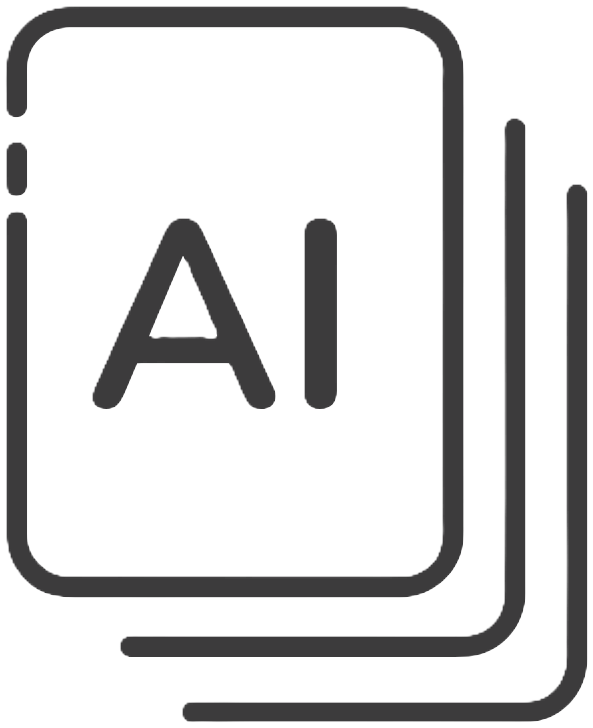

15 años codificando: ¿Miles de líneas de código y ningún proyecto propio?

Capa
Texto optimizado por AI
Han pasado 15 años desde que escribí mi primera línea de código. Recuerdo que a los 12 años ya estaba fascinado por el mundo de la programación. Todo empezó como un simple interés, pero rápidamente se convirtió en una pasión. Me llevó a estudiar Ingeniería en Sistemas y Computación, donde, incluso antes de graduarme, estaba desarrollando para una compañía.
Hoy, 16 de noviembre de 2024, me encuentro reflexionando sobre el trayecto: todas las funciones, las vistas, las clases, las estructuras de datos, los lenguajes, y las incontables herramientas que han pasado por mis manos. A lo largo de estos 15 años, la mayor parte de mi producción de código ha sido para clientes, grandes y pequeños, y no para mí mismo.
Leer mas...
16/11/2024